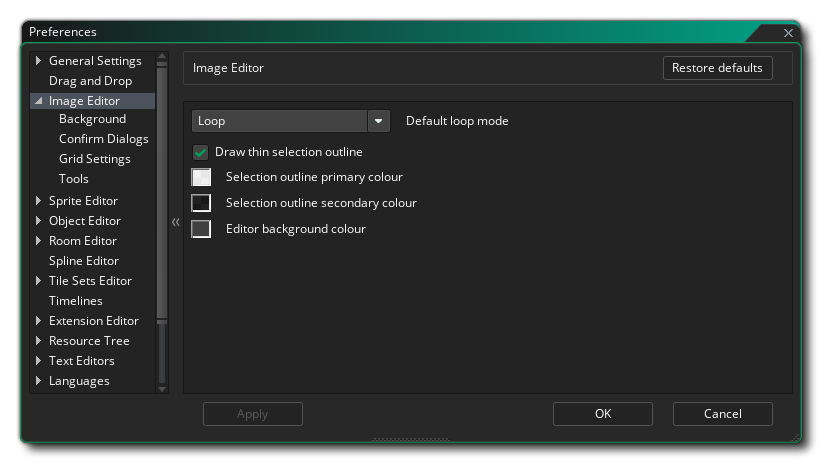
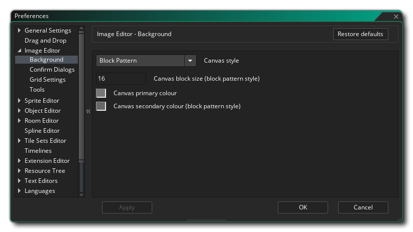
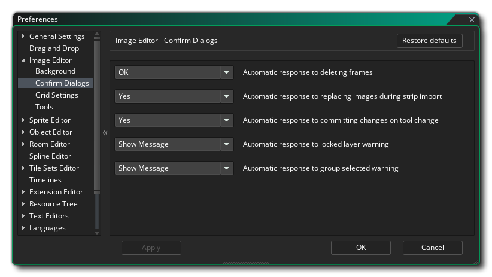
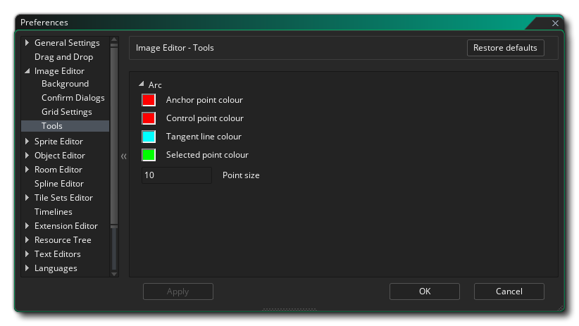

图像编辑器偏好设置（Image Editor Preferences）被用于定义精灵和 图像编辑器（Image Editor）窗口的外观和感受。下述为常规选项：
图像编辑器偏好设置中还有如下的子目录：
- 默认循环模式（Loop Mode）：图像编辑器中的循环按钮可以设置多种功能模式：首先可以单次播放（Play Once，译者注：不激活按钮），这种情况下动画会在到达最后一帧时停止，然后是从起点开始循环（Loop from the start），这种情况下动画会在结束后回到起点并继续播放，最后还有一个是往返播放（Ping pong），这种情况下动画会从头播放到尾再倒过来播放一遍回到开始（译者注：往返模式只可预览实际不可用，官方以后可能会添加实际应用的往返模式 ）。此处默认值为“循环”（Loop）。
- 绘制细的选区边框（Draw thin selection outline）：如果你勾选此项，则选区的边框将会是无视图像缩放的绝对的1像素宽，而解除此选项则使得边框为相对于图像缩放的1像素宽。该选项默认勾选。
- 选中轮廓颜色 1：区域的轮廓是两种颜色之间交替的虚线。该选项允许你选择这两种所用颜色的第一种颜色（包括 alpha 值），默认值为#FFFFFD0。
- 选中轮廓颜色 2：区域轮廓是两种颜色之间交替的虚线。该选项允许你选择这两种所用颜色的第二种颜色（包括 alpha 值），默认值为#0000D0。
- 编辑器背景颜色：在编辑精灵帧时，图像可能被放大或缩小，或者可能没有填满整个绘制窗口，这种情况下，你可以在这里设置背景颜色。默认值为#282828FF。
精灵编辑区域下方有一个背景，在这里你可以设置这个背景的选项。默认地，网格为灰色正方形，但你可以更改为下面的设置：
- 透明背景样式（Canvas） - 设置背景的“样式”，可以为 "方块图案" 或 "单色模式"。单色模式会单纯地把背景设置为你所选的颜色（使用颜色 1（Colour 1）设定，下文会提到），而默认选项是方块图案（它还可以通过下文所示的其余对话框选项进行修改）。默认选项是“方块图案”。
- 透明背景块大小（块图案样式） - 当你的背景选择为方块图案时，可以在此处设置方块的大小。默认为16像素，并允许最小值为2像素，最大值为256像素。
- 透明背景颜色 1 - 如果选择了单色模式，可以在这里选择颜色。你可以点击颜色卡来打开颜色编辑器去更改它。当使用方块图案选项时，该颜色被设置为交替方块的第一种颜色。默认值为(RGBA颜色) #c3c3c3ff。
- 透明背景颜色 2（块图案样式） - 如果选择了方块图案，那么与颜色 1 交替使用的颜色就是该颜色。你可以点击颜色卡来打开颜色编辑器去更改它。默认值为(RGBA颜色) #808080ff。
在这里你可以设置对当前精灵执行各种动作时的确认对话框的行为。选项有：
- 自动响应删除帧 - 当你删除帧时，默认显示一条消息询问你是否确定要这样做。设置此项为“是”（OK），你就可以去掉这些消息并且在接下来没有任何消息显示的情况下就可以删除帧。默认选项为“显示消息”（Show message）。
- 自动响应在长带图导入时替换图像 - 当你从 图像 下拉菜单中选择 导入长带图 时，会收到一条消息，警告你将覆盖精灵资源中已有的图像，有继续或不继续两个选项。你可以在此处设置是否显示这个消息，还是让IDE直接选择“是”（Yes）或“否”（No）的选项。默认值为“显示消息”。
- 自动响应工具更改时提交更改 - 当你在编辑帧后更改绘图工具时，默认会显示一条消息，询问你是否要提交所做的更改。设置此项为“是”（OK），你就可以去掉这些消息并且在接下来当你改变工具的时候没有任何消息显示的情况下就提交当前帧的改动。如果你选“否”（No），则改动会在你改变工具时静默地取消。默认选项为“显示消息”（Show message）。
- 自动响应锁定层警告 - 如果你试图编辑一个锁定的层，默认会显示一条警告信息告诉你不能这样做。如果设置此项为“是”（OK），则不会显示该消息，并且编辑将不会提示失败。
- 自动响应组选择的警告 - 如果在层编辑器中选择多个层，然后尝试绘制或编辑，那么默认情况下将显示一条消息，告诉你这是不可能的。你可以在此处选择“是”来去掉这个消息并且无法一起编辑多个图像，这种情况下只有在选择单个层的时候才可以正常编辑。默认选项为“显示消息”（Show message）。

网格偏好设置（Grid Settings preferences ）被用于设置图像网格会如何显示，有如下可用选项：
- 网格水平间距（像素） - 设置图片网格的水平线条间距。默认值为1像素。
- 网格垂直间距（像素） - 设置图片网格的垂直线条间距。默认值为1像素。
- 显示网格 - 勾选此项则图像编辑器会自动带上网格地打开图像。默认为关。
- 对齐网格 - 如果勾选此项，图像编辑器就会自动地将某些工具吸附到网格上。默认为关。
- 网格线颜色 - 在这里你可以设置网格线的颜色（包括透明度）。默认值为#000000FF。
在这里你可以设置图像编辑器中一些工具的操作和显示方式的各种选项。
如果你使用了弧线工具（Arc Tool）
那么你可以在这里设置用于绘制节点属性的各种颜色：
- 锚点颜色 - 为锚点设置颜色。默认值为（RGBA颜色） #FF0000FF。
- 控制点颜色 - 设置每个控制点“手柄”的颜色。默认值为（RGBA颜色） #FF0000FF。
- 切线颜色 - 为连接控制点到锚点的线条设置颜色。默认值为（RGBA颜色） #00FFFFFF。
- 选定点颜色 - 设置选定锚点的颜色。默认值为（RGBA颜色） #00FF00FF。
- 点大小 - 设置不同锚点和控制点的大小。默认值为10像素。